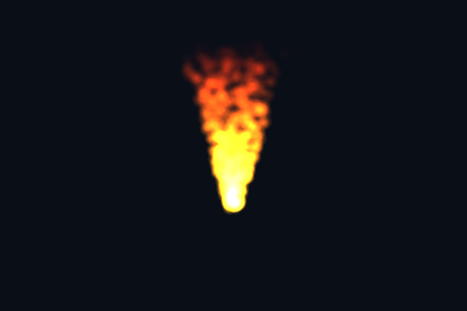

第 32 课：实例化粒子
课程首页 · 上一课 · 下一课
目标与运行
cd OpenGL
.\scripts\run.ps1 -Lesson 32_particles
预期画面：600 个橙黄色粒子组成向上飘散的火焰状光束。
相机：W/A/S/D 移动，Q/E 升降，按住右键转向，Esc 退出。
代码阅读顺序
main.cpp 更新实例数据 → particle.vert 的 right/up billboard → particle.frag
从本课 main.cpp 进入；公共工具在 common，GLSL 在 shaders。先画出每一遍读什么、写什么，再逐个展开辅助类。
原理与实现
粒子系统包含生成、寿命、运动和外观。此课用确定性的编号与周期 age 计算位置，目的是复现稳定画面；不是完整物理粒子模拟器。每实例 vec4 存 xyz 与 normalized age，CPU 每帧更新缓冲，GPU 实例化绘制同一个矩形。
Billboard 通过相机的 right/up 构造朝向眼睛的平面：particlePos+right*x+up*y。这样无需几何 shader 扩展点。片段阶段根据到圆心的距离生成柔边 Alpha，寿命结束时逐渐消失。
火焰使用 GL_SRC_ALPHA,GL_ONE 加法混合，通常不用从远到近排序；如果改为烟雾的标准 Alpha 混合，就需要按深度排序。保留深度测试、关闭深度写入，让不透明场景能挡住粒子。本课背景只有粒子，后续可放一个遮挡立方体测试。
注意清屏顺序：每帧先恢复 glDepthMask(GL_TRUE)，清除深度，再设为 false 绘制粒子。否则 glClear 无法更新深度，可能导致所有粒子都被旧深度挡住。此问题也说明“程序无 GL 错误”不等于“画面正确”。
本示例直接向普通颜色窗口混合，用于看清实例数据；实际发光粒子应加入线性 HDR pass，再经 Bloom/曝光/最终编码。大系统还要考虑缓冲流送、粒子排序成本和填充率。
修改练习
改成烟雾颜色并实现排序；加入地面和遮挡物；把粒子放进第 34 课的 HDR 场景。
修改后重新执行 cmake --build build --config Debug --target 32_particles --parallel。GLSL、模型、图片会复制到程序旁的 shaders/assets 目录。源文件应修改教程根目录下的版本，运行目录的副本会被下一次构建覆盖。
自测与参考答案
加法混合为什么往往可以不排序？
颜色累加近似满足交换性，但深度、精度和 Alpha 处理仍需一致，不能推广到普通透明混合。
检查与排错
运行 32_particles.exe --smoke 可执行确定时间的四帧渲染检查。重要技术开关还可用 --smoke --variant --capture 与默认抓图对比。共享工具会检查 GL 错误、非背景像素和图像动态范围，但这不能代替人工核对技术含义。参见 进阶排错。
参考截图
以下为课程自带素材、固定时间 1 秒时的实际渲染；你的相机与操作改变后画面会不同。
